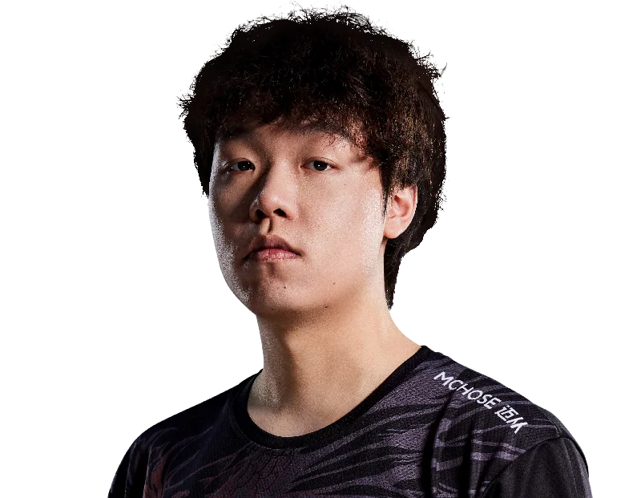

FunPlus Phoenix / 钟弘祖
coconut.
ALL IN. EVERY ROUND.Sovacoconut / 钟弘祖
coconut / FPX
ONE NAME.EVERY ROUND.ALL IN.
钟弘祖，FunPlus Phoenix。
从每次选下英雄，到每次站上赛场。
coconut / 赛场影像MOMENTS
MOMENTS
THAT MATTER.
coconut.
FunPlus Phoenix
每一瞬间，都是比赛的一部分。
Riot Games / 官方赛场影像
coconut / 职业英雄池
DIFFERENT AGENTS.
SAME PLAYER.
从最熟悉的英雄，看到每一种打法。猎枭
Sova.
24% 全英雄使用占比
83职业出场地图
190.7平均战斗评分 ACS
1.00击杀 / 死亡 K:D
1,119总击杀
55首杀
VLR 全时期职业数据 · 2026-11-02 快照 · 出场单位为地图，使用占比不是胜率。查看原始统计 ↗
coconut / 比赛记录ONE PLAYER.
ONE PLAYER.
EVERY ROUND.
351职业地图
5,084总击杀
1.05全英雄 K/D
VCT 26: CN Threshold Week 2 ⋅
QF
FPX / AQ1 : 2+
VCT 26: CN Threshold Week 1 ⋅
QF
FPX / DRG1 : 2+
CN EVO 26: Act 3 GF
FPX / KBG3 : 2+
CN EVO 26: Act 3 SF
FPX / AQ2 : 1+
CN EVO 26: Act 3 QF
FPX / NOVA2 : 0+
最近已收录系列赛；生涯总计由全英雄表求和，K/D 为总击杀除以总死亡。

下一位 / FPX 阵容